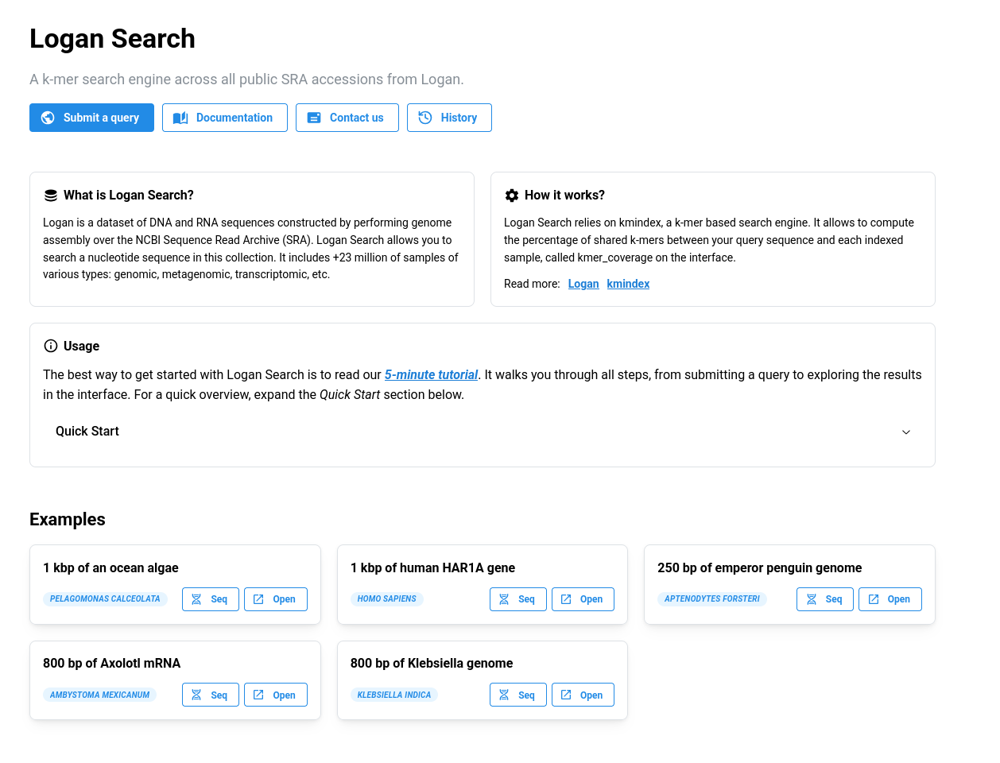
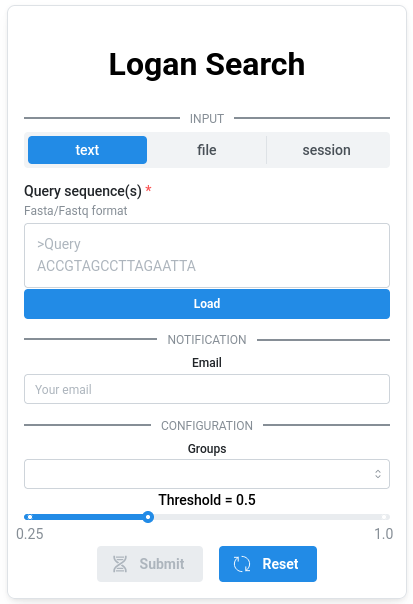
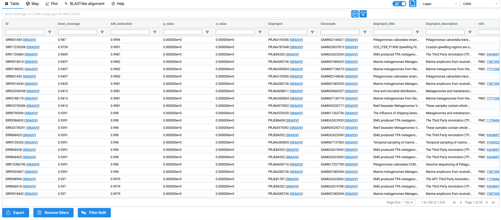
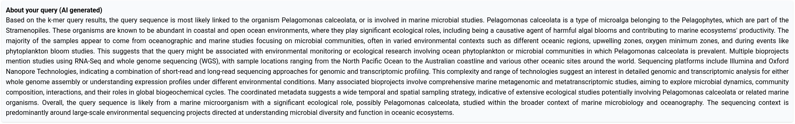
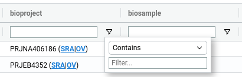
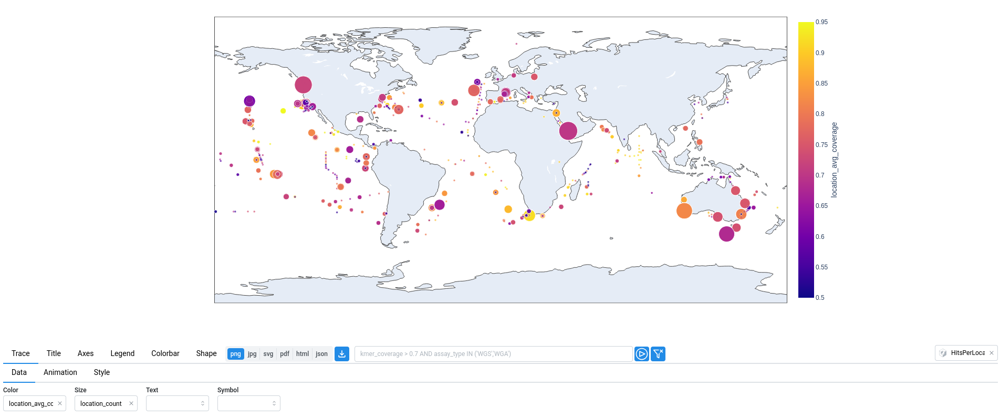
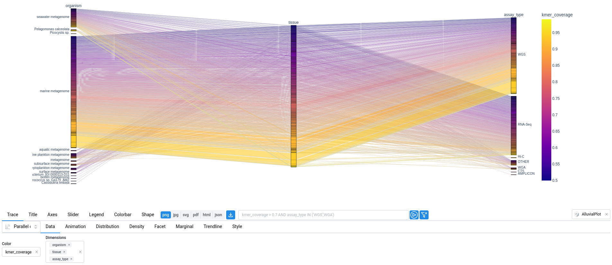
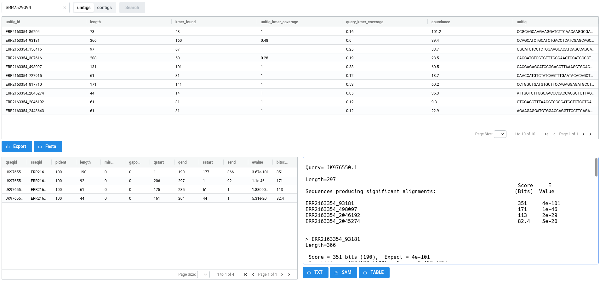

Logan-Search🔗
Introduction🔗
Logan is a dataset of DNA and RNA sequences constructed by performing genome assembly over the NCBI Sequence Read Archive (SRA). The result is two sets of sequences, one corresponding to unitigs (1), and the other one to contigs (2).
-
In a De Bruijn Graph, unitigs are all the sequences corresponding to non-branching paths. In that case, every k-mer that occurs more than twice in the original SRA sample will appear in the unitigs. Conversely, any k-mer in the unitigs is also present somewhere in the original SRA reads.
-
Contigs are obtained by compacting unitigs, i.e. by making a choice at ambiguous bifurcations in the De Bruijn Graph. Compared to unitigs, the only theoritical guarantee is that every k-mer in the contigs exists in the original reads.
All assembled sequences from Logan are provided free of charge and are available for unrestricted download, e.g. using wget.
Download commands
Download a sample given its accession (eg. SRR17555654)
For unitigs
wget https://s3.amazonaws.com/logan-pub/u/[accession]/[accession].unitigs.fa.zst
# for example:
wget https://s3.amazonaws.com/logan-pub/u/SRR17555654/SRR17555654.unitigs.fa.zst
For contigs
wget https://s3.amazonaws.com/logan-pub/c/[accession]/[accession].contigs.fa.zst
# for example:
wget https://s3.amazonaws.com/logan-pub/c/SRR17555654/SRR17555654.contigs.fa.zst
Which samples should you download?🔗
This is where Logan Search comes in. Logan Search allows you to query a DNA or RNA sequence across all Logan samples (plus all the reference genomes from GenBank and RefSeq). By submitting a sequence, you can, in a few minutes, find which samples contain that sequence and explore the results directly in your browser.
How it works?🔗
Logan Search relies on kmindex, a k-mer (1) based search engine. Think of it like BLAST, but instead of aligning to genomes, it compares your query sequence against Logan’s unitigs. For each sample, it computes the percentage of shared k-mers between your query sequence and the indexed unitigs.
- A k-mer is a word of length k. In practice we used k=31.
Submitting a query🔗
If you use this service, please cite: Chikhi R, Lemane T, Loll-Krippleber R, Montoliu-Nerin M, Raffestin B, Camargo AP, Miller CJ, Fiamenghi MB, Agustinho DP, Majidian S, Autric G, Hugues M, Lee J, Faure R, Curry KD, Moura de Sousa JA, Rocha EPC, Koslicki D, Medvedev P, Gupta P, Shen J, Morales-Tapia A, Sihuta K, Roy PJ, Brown GW, Edgar RC, Korobeynikov A, Steinegger M, Lareau CA, Peterlongo P, Babaian A. Logan: Planetary-Scale Genome Assembly Surveys Life’s Diversity. bioRxiv. 2025. doi:10.1101/2024.07.30.605881. (BibTeX | Text)
You can submit a query using the dedicated button on the homepage, or directly via the following link: logan-search.org/dashboard.


Required inputs🔗
1. Sequence (required)🔗
The query sequence must be provided in FASTA format, either by uploading a file or by pasting it into the text area. Each submission is limited to a single sequence with a maximum length of 2.5 kb.
2. Groups (required)🔗
The Logan Search index is composed of a large number of sub-indexes. You can choose to run your query across all of them or only a subset.
Available options (all include reference genomes from GenBank and RefSeq):
All: all Logan unitigs, SRA up until 2023 - 23.4 million total samplesAll_No_viral_human: excludes viral and human samples - 65.49 % of the total samplesFast: optimized subset for faster queries, also excluding viral samples - 77.59% of the total samples, 99.5 % of the non viral samples (see below)Fast_No_human: same as Fast, but excluding human samples - 64.99 % of the total samplesGenBank_RefSeq: only GenBank and RefSeq reference genomes - ~45k samples
About Fast groups
The full index is composed of 2,869 sub-indexes. These sub-indexes grouping was based on superkingdom (with exceptions for human and mouse), sequencing type, and number of unique k-mers. Some combinations are rare and result in very small sub-indexes. These are excluded from Fast. Since querying each sub-index add a fixed computational cost regardless of its size or results, excluding these small sub-indexes significantly reduces query time while still covering the vast majority of Logan. In practice, the Fast option queries approximately 99.5% of non viral samples.
3. Threshold (optional)🔗
The minimum proportion of k-mers from the query required to consider a match, ranging from 0.25 to 1. Increasing this threshold makes the search more stringent (fewer but more confident matches), while lowering it increases sensitivity. This parameter has no impact on the query time.
4. Email (optional)🔗
If you would like to be notified when your query is complete, you can provide your email address. Once the query finishes, you will receive two links: one to visualize the results and another to download them.
History🔗
Each query is assigned an ID, such as kmviz-08a28c6c-9691-4eca-a8aa-ef62f098f62c. You can save this ID to revisit your results later at https://logan-search.org/dashboard/<ID>. Your query history is also accessible from the Logan Search homepage. All results are retained for one month.
Exploring results🔗
The results page consists of four views: Table, Map, Plot, and Blast-like alignment.
1. Table🔗
The metadata table displays all results returned by your query, with one entry per match. Each row therefore corresponds to a single SRA sample. The metadata shown in the table originate from two sources. First, raw metadata are retrieved directly from the Sequence Read Archive metadata. Second, these metadata are parsed and processed to infer additional information, such as tissues or diseases associated with the experiment. When possible, this information is further linked to standard ontologies, such as the BRENDA Tissue Ontology (BTO) or the Disease Ontology (DO). All inferred fields are highlighted in blue in the table.

About ANI, p-value and e-value
The ANI estimate uses the Mash Screen which is defined as: $$ \text{ANI} = \left( \frac{\text{n. of hitting kmers in query}}{\text{n. of kmers in query}}\right) ^{1/k} $$
The p-value indicates the probability that a match happened by chance. Let \(n_s\) be the number of distinct k-mers in an accession, and suppose that querying a k-mer has a false positive rate \(f\).
The probability that a k-mer drawn uniformly at random from a universe \(\mathcal{K}\) is found is
In our case, \(|\mathcal{K}| = 4^k\). Now consider a query made of \(n_q\) distinct \kmers, each drawn independently and hitting with probability \(p\). Since \(|\mathcal{K}|\) is very large, the number of hits can be approximated as a Poisson distribution with parameter \(\lambda = n_q \cdot p\). Then the reported p-value is the probability that a Poisson distribution with parameter \(n_q\cdot p\) is higher than the observed number of hits.
The e-value is the p-value times the total number of accessions, which represents the expected number of matches with equal or greater similarity that would be observed by chance.
Metadata description
acc: Accession ID (SRA metadata)kmer_coverage: Ratio of shared k-mer between the query and the sampleANI_estimation: ANI estimation based on Mash Screen estimator:E = (|Qk| & |Sk| / |Qk|)^(1/k), withQkandSkthe query and sample k-mer setsbioproject: Bioproject ID (SRA metadata)biosample: Biosample ID (SRA metadata)bioproject_title: Bioproject title (SRA metadata)bioproject_description: Bioproject description (SRA metadata)refs: References associated to accessions (From ENA xref)sample_acc: Sample accession (SRA metadata)assay_type: Sequencing type (SRA metadata)center_name: Sequence center name (SRA metadata)experiment: Experiment ID (SRA metadata)sample_name: Sample name (SRA metadata)organism: Organism (SRA metadata)disease_source: The field from SRA metadata used to infer 'do_label' and 'do_id' (SRA metadata parsing + AI)disease_text: The text from 'disease_source' used to infer 'do_label' and 'do_id' (SRA metadata parsing + AI)do_label: The Disease ontology label, inferred from 'disease' (SRA metadata parsing + AI)do_id: The Disease ontology ID, inferred from 'disease' (SRA metadata parsing + AI)tissue: The sequenced tissue inferred from 'tissue_source' and 'tissue_text' (SRA metadata parsing + AI)tissue_source: The field from SRA metadata used to infer 'tissue' (SRA metadata parsing + AI)tissue_text: The text from 'tissue_source' field used to infer 'tissue' (SRA metadata parsing + AI)bto_id: The BRENDA tissue ontology ID (SRA metadata parsing + AI)contigs_n50: Contigs n50 (Logan assembly metadata)contigs_nbseq: Number of contigs (Logan assembly metadata)contigs_maxlen: Max contigs length (Logan assembly metadata)contigs_sumlen: Sum of contig lengths (Logan assembly metadata)unitigs_n50: Unitigs n50 (Logan assembly metadata)unitigs_nbseq: Number of unitigs (Logan assembly metadata)unitigs_maxlen: Max unitigs length (Logan assembly metadata)unitigs_sumlen: Sum of unitig lengths (Logan assembly metadata)instrument: Sequencing instrument (SRA metadata)librarylayout: Library layout (SRA metadata)libraryselection: Library selection (SRA metadata)librarysource: Library source (SRA metadata)library_name: Library name (SRA metadata)platform: Sequencing Platform (SRA metadata)sra_study: Study ID (SRA metadata)releasedate: Release date (SRA metadata)mbytes: Size of sequencing reads in megabytes (SRA metadata)avgspotlen: (SRA metadata)mbases: Size of sequencing reads in megabases (SRA metadata)biosamplemodel_sam: (SRA metadata)collection_date_sa: (SRA metadata)
To provide a quick overview of the query context, metadata associated with the top hits are supplied to a large language model (LLM) to generate a short summary.

Metadata fields used for the summary generation
The following fields are used: kmer_coverage, bioproject_title, bioproject_description, releasedate, assay_type, latitude, longitude, organism, tissue, instrument, librarysource, platform, center_name, disease_text
The metadata table serves as the central data source for all visualizations in the interface. This means that any operation applied to the table, such as filtering or sorting, will automatically update all figures. The reverse is also true: selections made on the visualizations (e.g. lasso or box selections) are reflected as filters in the table. As a result, users can easily focus on specific subset of results, such as samples from a particular geographic location, simply by selecting the corresponding region the map.
Sorting and filtering
1. Filtering🔗
Filters can be applied to the table in two ways. First, users can define SQL-like WHERE queries, which can be executed from the bar located above the table.
Alternatively, filters can be applied directly within the table using the menu available next to each column header ().

2. Sorting🔗
Sorting is done by clicking on the column headers of the table, switching between ascending or descending order.
2. Map and Plot🔗
The Map and Plot tabs provide visual ways to explore the data presented in the metadata table. These interactive views allow you to quickly identify patterns, such as geographic distribution or relationships between variables, and to select subsets of data directly from the visualizations. Essentially, these two tabs are graphical wrappers built on top of the Plotly plotting library. The available plot options correspond to those provided by Plotly Express. Below are a few examples.
In the map below, the size of each point corresponds to the number of samples at that location (location_count), while the color represents the average k-mer coverage (location_avg_coverage).

In the plot below, a parallel categories diagram displays the relationships between organism, tissue, and assay_type, while the color represents the kmer_coverage.

3. Blast-like Search🔗
Logan-Search enables querying at the scale of SRA samples by searching for Logan unitigs. To go further and identify the specific unitig(s) or contig(s) containing the query sequence, a BLAST-like search can be performed on demand at the level of an individual sample.
As shown below, the BLAST-Like Alignement tab allows you to select a sample and perform a search on its contigs or unitigs. This process is executed on demand and typically takes a few tens of seconds. For particularly large sets of unitigs or contigs, you may encounter timeouts. To avoid this, it is possible to perform the search locally on your own machine using the results, see Logan Blaster instructions below.
The results consist of three views. At the top, a list of unitigs or contigs that matched the query is displayed, along with their sequences and abundances (for more information on abundance, see here. At the bottom, alignment results are shown in two panels: a table on the left and detailed alignments on the right.

Logan Blaster🔗
If you need to perform alignments against multiple samples, this can be done locally on your machine. We provide a dedicated tool for this purpose: LoganBlaster. If users' email is provided, the sent email also provides the logan-blaster command associated to the performed search.